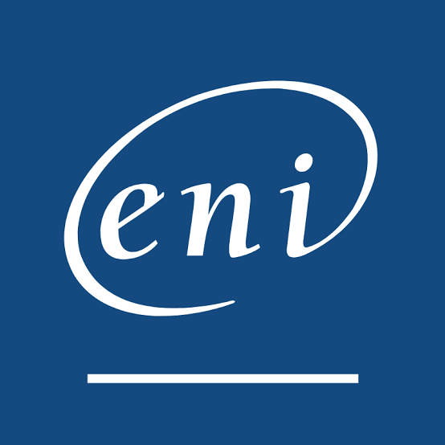
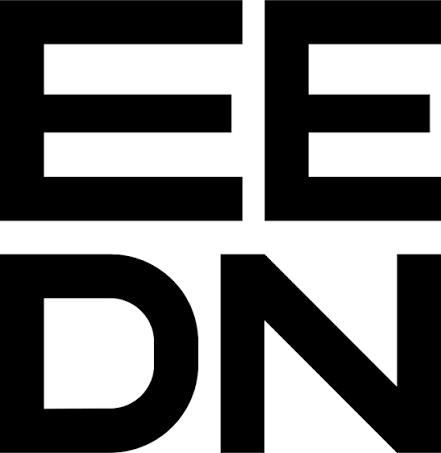
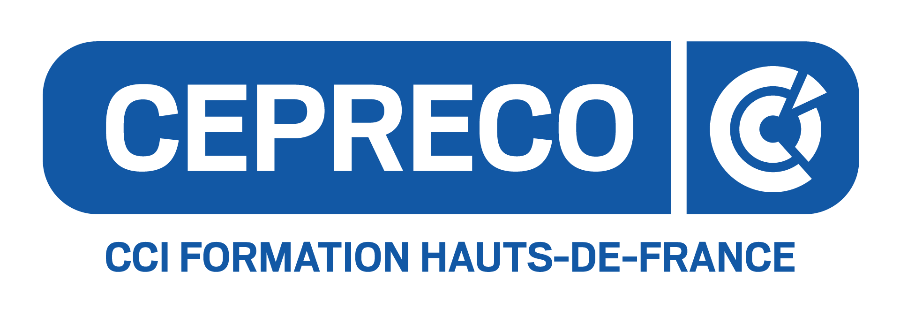
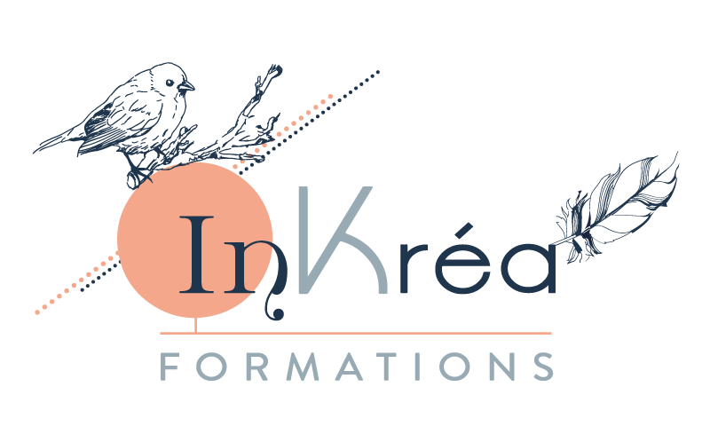
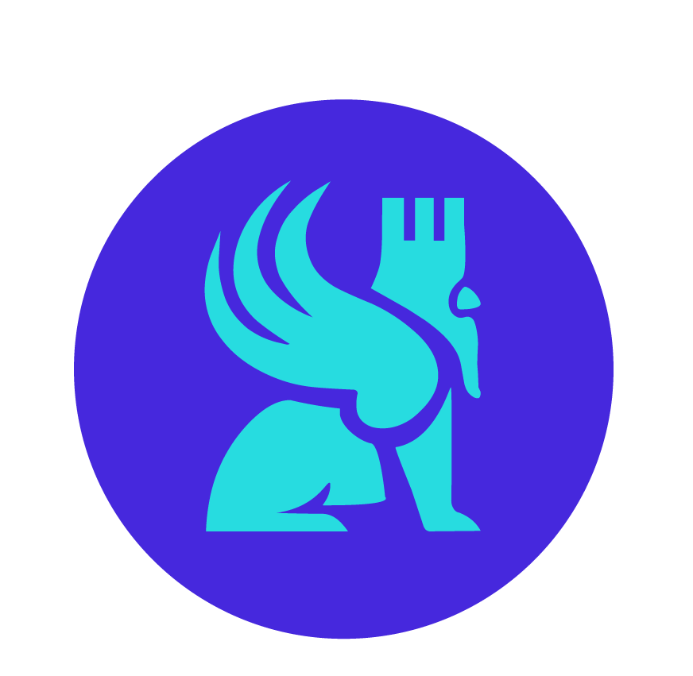
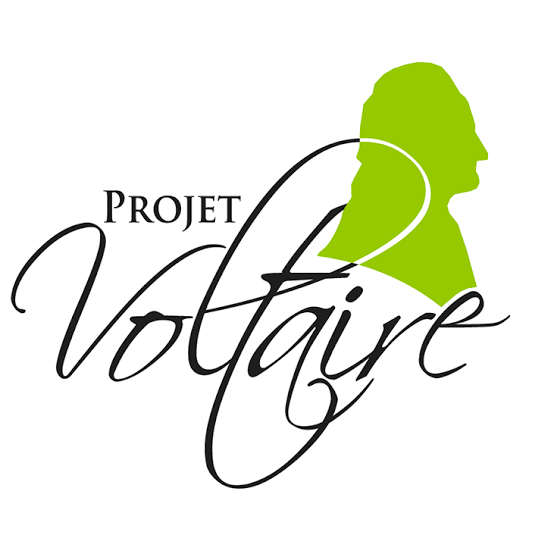

Concepteur développeur d'applications (CDA) En cours
ENI École Informatique · niveau 6 (bac+3) · 2026 – 2027
- Titre homologué par l'État, spécialité Java
- Un stage de 2 mois est nécessaire à l'obtention du titre
Concepteur développeur d'applications spécialité Java en formation à l'ENI
Stage de 2 mois, du 22/02/2027 au 16/04/2027 Lille et métropole
Java est en cours d'apprentissage : initiation, puis programmation orientée objet, et Java avancé en décembre 2026. Les autres technologies seront abordées au fil de la formation. Ce que j'ai déjà mis en pratique se trouve dans « Compétences complémentaires » et « Projets ».
Peut-être avec vous
2026 – 2027 · ENI École Informatique
Préparation au titre « Concepteur Développeur d'Applications » homologué par l'État, niveau 6 (bac+3).
2026 – 2027 · projet informatique développé à l'ENI
Analyse et conception, développement d'un frontend Angular connecté à un backend Java Spring reposant sur une base de données relationnelle, selon une architecture RESTful conforme aux standards professionnels.
Sélectionne une technologie marquée d'un point pour voir son contexte.
Depuis 2016 en assurance : prévoyance, santé, cotisations, paramétrage, commissions, indemnisation, épargne individuelle et retraite complémentaire.

ENI École Informatique · niveau 6 (bac+3) · 2026 – 2027

EEDN · bac+2 · du 08/09/2025 au 20/02/2026 · diplôme remis en 2026

Cepreco · bac+2 · 09/2015 – 06/2016 (stage inclus)

IA éthique et responsable · 26 Academy · Inkrea Formations (2025)
Formation Power BI Expert · DataScientest (devenu Liora) · terminée
Certificat Voltaire · niveau Professionnel · 02/10/2026